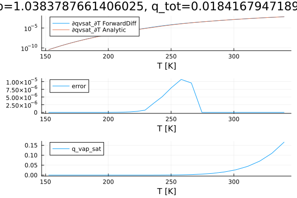

Clausius-Clapeyron Relation Validation
Overview
This document validates the analytical derivatives of the Clausius-Clapeyron relation by comparing them with finite difference derivatives computed using ForwardDiff.jl. The Clausius-Clapeyron relation describes how the saturation vapor pressure changes with temperature during phase transitions.
Purpose
The validation ensures that our analytical implementation of the Clausius-Clapeyron derivatives is mathematically correct and numerically accurate. This is critical for:
- Saturation adjustment algorithms that rely on accurate derivatives
- Numerical stability in thermodynamic calculations
- Physical consistency of the thermodynamic formulation
Implementation
The validation compares two approaches:
- Analytical derivatives: Direct computation using the derived mathematical expressions
- Finite difference derivatives: Numerical approximation using ForwardDiff.jl
include("Clausius_Clapeyron.jl")"/home/runner/work/Thermodynamics.jl/Thermodynamics.jl/docs/build/Clausius_Clapeyron.svg"Results
The plot shows:
- Top panel: Comparison of analytical vs. finite difference derivatives
- Middle panel: Error between the two methods
- Bottom panel: Saturation vapor pressure as a function of temperature

Interpretation
- Agreement: The analytical and finite difference derivatives should closely match
- Error analysis: The middle panel shows the difference between methods
- Physical range: The temperature range covers typical atmospheric conditions
- Validation: Small errors indicate correct implementation